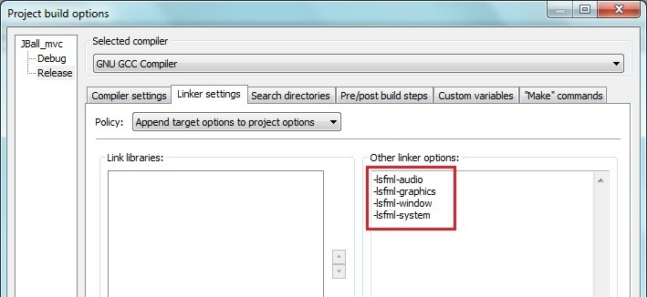

En informatique, une bibliothèque ou librairie logicielle (ou encore, bibliothèque de programmes) est un ensemble de fonctions utilitaires, regroupées et mises à disposition afin de pouvoir être utilisées sans avoir à les réécrire.
La SFML est donc un ensemble d'outils. De plus, elle est multimédias car elle gère les images et le son.
Quelle est la différence entre ces deux bibliothèques ?
La SDL est écrite en langage C alors que la SFML est écrite en langage C++. La première est donc faite pour programmer en C (langage impératif), alors que la seconde est faite pour programmer en C++ (langage orienté objet).
Ce que cela implique :
Il est obligatoire de connaître le langage adéquat à la bibliothèque de votre choix (rien ne vous empêche de connaître les deux ;) ) ;
Les notions à apprendre sont donc différentes et chacune a ses avantages et inconvénients ;
Le niveau requis pour utiliser la SFML est un peu plus haut que celui pour la SDL, vu que le C++ requiert des notions plus avancées que le langage C. Néanmoins, nous verrons plus tard les avantages d'un tel langage.
Si vous n'êtes pas au courant, le site du zéro propose des tutoriels pour apprendre ces langages :
Fonctionne sur différentes plateformes comme Windows (98, 2000, XP, Vista, 7), Unix (Linux, Mac OS X) ;
Disponible dans les langages C++, C, .Net (C#, VB.Net, C++/CLI, ...), Python, D, Ruby ;
Contient tous les modules pour gérer les images, l'audio, les évènements et bien d'autres. Vous n'avez donc qu'un seul SDK (kit de développement) à télécharger ;
Intégrable à d'autres GUI (bibliothèques d'interface graphiques) comme Qt, wxWidgets, MFC et autres.
Peut utiliser des outils similaires à la 3D (zoomer, déplacement de la caméra, rotation de la scène) ;
Effets modernes, disponibles en accélérés (si le matériel supporte l'accélération matérielle) : alpha-blending, rotations, shaders, et autres ;
Utilisation facile des textes ;
Les polices suivantes sont supportées : TTF, CFF, PCF, FNT, BDF, PFR, SFNT.
Caractéristiques audio
Peut charger et sauvegarder les formats audio standards : WAV, OGG, etc. La SFML ne peut pas gérer les formats MP3 car ceux-ci sont soumis à une licence Thompson Multimédia ;
Utilise l'accélération matérielle si elle est disponible ;
Supporte les formats multi-canaux (mono, stéréo, 4.0, 5.1, 6.1, 7.1).
La SFML permet donc de lire, de modifier, d'afficher et d'enregistrer différentes ressources. Elle gère aussi les événements et le temps que nous étudierons plus tard.
Licence d'utilisation
Citation : Site officiel de la SFML
SFML est complètement gratuite pour toute utilisation, commerciale ou non, open-source ou non. C'est-à-dire que vous pouvez utiliser la SFML dans vos projets sans aucune restriction. Une indication que vous utilisez la SFML n'est pas obligatoire, mais serait appréciée.
Une fois dans la page des téléchargements, rendez-vous dans la partie "Bibliothèques SFML officielles" et placez-vous sur le tableau concernant le langage C++ :
Utilisateurs de Windows
Si vous avez l'EDI Visual Studio, prenez la version Visual C++ correspondante à votre version du logiciel. Pour les autres, prenez la version MinGW.
Utilisateurs de Linux et Mac OS X
Pour vous rien de plus simple ;) : vous choisissez la version de votre système d'exploitation (32 ou 64 bits).
Vous allez maintenant apprendre à configurer des projets SFML dans votre EDI.
Conseils
Le dossier d'installation
Personnellement j'installe toujours les bibliothèques dans un dossier leur étant réservé. Cela peut éviter d'avoir à retélécharger la bibliothèque si vous l'avez mise dans un dossier qu'un autre programme peut modifier, pour une mise à jour par exemple.
Lier une bibliothèque à un exécutable
Comme je le disais dans l'introduction, une bibliothèque est un ensemble de fonctions, stockées dans des fichiers dont l'ensemble constitue la bibliothèque. Vu que nous utilisons les fonctions de la SFML, nos programmes ont besoin de savoir où se situent les fichiers de la bibliothèque : c'est ce qu'on appelle le linkage, le fait de lier une bibliothèque ! Si je vous parle de tout ça, c'est qu'il existe deux façons de lier une bibliothèque : soit statiquement, soit dynamiquement. Je ne vais pas rentrer dans les détails, mais juste vous prévenir que nous opterons ici pour la méthode dynamique, plus souvent utilisée et plus utile dans la plupart des cas. Néanmoins rien ne vous empêche de lier la SFML statiquement ;) .
Plateforme Windows
Pour les utilisateurs du compilateur Visual C++ (Visual Studio)
Placez le dossier SFML-x.y où vous le souhaitez. Maintenant, Visual Studio va avoir besoin des dossiers lib et include de ce répertoire. Vous devez soit les placer dans le répertoire de Visual Studio, soit lui indiquer où ces dossiers se trouvent.
Installation dans le répertoire de l'EDI :
Copiez le dossier "SFML-x.y\include\SFML" vers le répertoire "VC\include" ;
Copiez tous les fichiers .lib du dossier "SFML-x.y\lib" vers le répertoire "VC\lib".
Installation dans un autre répertoire :
Ouvrez Visual Studio. Allez dans le menu Tools -> Options, puis dans Projects and Solutions -> VC++ Directories
Dans la liste déroulante Show directories for, choisissez Include files, cliquez sur l'icône Parcourir et sélectionnez ensuite votre dossier "SFML-x.y\include". Choisissez ensuite Library files, et faites la même opération que précédemment en ajoutant cette fois-ci le dossier "SFML-x.y\lib".
Configuration de la compilation (Linkage) :
Nous allons maintenant créer un projet SFML. Allez dans Fichier -> Créer Nouveau projet -> Win32 console application.
Allez ensuite dans les options de votre projet, puis dans le menu Linker -> Input. Assurez-vous que Active(Release) soit choisi dans Configuration. Ensuite sur la ligne "Additional dependencies" nous allons ajouter le module image : sfml-graphics.lib . Nous ajouterons au fur et à mesure du tutoriel les autres modules que nous voudrons utiliser.
Il faut ensuite lier de la même façon Visual Studio avec les versions de débogage des modules SFML, qui sont suffixées par "-d" : sfml-graphics-d.lib par exemple. Choisissez le mode Active(Debug) pour configurer les linkers des modules et n'oubliez pas les "-d" : les oublier en mode Debug peut faire planter l'application :) .
Pour les utilisateurs du compilateur MinGW (Code::Blocks)
Placez le dossier SFML-x.y où vous le souhaitez. Maintenant, Code::Blocks va avoir besoin des dossiers lib et include de ce répertoire. Vous devez soit les placer dans le répertoire de Code::Blocks, soit lui indiquer où ces dossiers se trouvent.
Installation dans le répertoire de l'EDI :
Copiez le dossier "SFML-x.y\include\SFML" vers le répertoire "MinGW\include" ;
Copiez tous les fichiers .a du dossier "SFML-x.y\lib" vers le répertoire "MinGW\lib".
Installation dans un autre répertoire :
Ouvrez Code::Blocks et allez dans le menu Settings / Compiler and debugger, puis dans Global compiler settings / Search directories. Suivez ensuite ces instructions :
Dans Compiler, ajoutez "SFML-x.y\include" ;
Dans Linker, ajoutez "SFML-x.y\lib".
Configuration de la compilation (Linkage) :
Nous allons maintenant créer un projet SFML. Allez dans File -> New Project -> Console application.
Allez ensuite dans Project -> Build options, puis cliquez sur Release à gauche. Ensuite ajoutez le module image dans le menu Linker settings -> Other linker options.

Il faut ensuite lier de la même façon Code::Blocks avec les versions de débogage des modules SFML, qui sont suffixées par "-d" : -lsfml-system-d par exemple. Choisissez le mode Debug sur la gauche pour configurer de la même façon les linkers des modules et n'oubliez pas les "-d" : les oublier en mode Debug peut faire planter l'application :) !
Systèmes Linux (compilateur gcc)
Une fois votre dossier SFML installé où vous le souhaitez, placez vous dans celui-ci et tapez la commande :
sudo make install
sudo apt-get install libglu1-mesa-dev
Suivez ensuite les informations qui s'affichent dans la console.
Voici la liste des paquets nécessaires au fonctionnement de la SFML :
libgl1-mesa-dev ;
libglu1-mesa-dev ;
libopenal-dev ;
libopenal1-dbg ;
libsndfile1-dev ;
libx11-dev ;
libx11-6-dbg ;
libfreetype6-dev ;
libxrandr-dev ;
libxrandr2-dbg ;
Configuration de la compilation :
Pour compiler n'importe quel programme SFML avec gcc, il suffit d'utiliser les commandes habituelles ;) :
g++ -c clock.cpp
g++ -o clock clock.o
Si vous voulez utiliser tous ces modules il faudra donc écrire à la deuxième ligne :
Le module graphics requiert la bibliothèque freetype ;
Le module audio requiert lui libsndfile et openal.
Ces bibliothèques externes sont citées dans la liste plus haut. Si vous rencontrez des problèmes avec une version d'OpenAL (ce qui arrive souvent étant donné que l'implémentation Linux est peu stable), vous pouvez la remplacer par l'implémentation OpenAL-Soft.
Systèmes Mac OS X (Xcode)
Une fois que vous avez placé votre dossier SFML où vous le souhaitez, copiez le contenu du dossier "SFML-x.y/lib" (ou lib64 dans le cas de la version 64 bits) dans le répertoire <Racine Disque>/Bibliothèque/Frameworks. Rendez-vous ensuite dans le dossier "SFML-x.y/extlibs/bin". Si vous avez choisi la version 32 bits, copiez les dossiers OpenAL.framework et sndfile.framework dans le répertoire "/Bibliothèque/Frameworks". Dans le cas de la version 64 bits, copiez uniquement le contenu du dossier x86_64.
Nous allons ensuite utiliser des modèles de projets (templates) pour Xcode. Pour cela, copiez les dossiers "SFML Window-based Application" et "SFML Graphics-based Application" du dossier "SFML-x.y/build/xcode/templates" dans "<Racine Disque>/Developer/Library/Xcode/Project Templates/Application", et le dossier "SFML Tool" dans "/Developer/Library/Xcode/Project Templates/Command Line Utility".
En lançant Xcode puis File -> New Project -> Applications, vous devriez voir les templates SFML dans la liste :
Maintenant vous êtes prêts à programmer votre premières application SFML : les EDI peuvent maintenant compiler, lier des modules et exécuter des programmes tranquillement ;) !
Tout d'abord, lancez votre EDI et créez un nouveau projet SFML. Paramétrez votre projet pour qu'il n'utilise que les modules system, window et graphics.
Si vous devez utiliser plusieurs modules, il faut toujours les mettre dans le bon ordre, car ils sont dépendants :
graphics (utilise window et system)
window (utilise system)
system
Voilà, on peut commencer à programmer !
Initialisation de la fenêtre
Il faut inclure le module graphique et l'espace de nommage sf :
// main.cpp
#include <SFML/Graphics.hpp>
using namespace sf;
L'espace de nommage permet au compilateur de reconnaître directement les types (attributs, fonctions, classes, ..) de la SFML. Si vous ne le mettez pas, il vous faudra écrire "sf::" devant chaque type de la bibliothèque. Si vous n'êtes pas au point sur les namespace, lisez le tutoriel de Vanger les espaces de noms namespace.
Ensuite, on crée la fonction principale du programme et on initialise la fenêtre :
int main()
{
RenderWindow app(VideoMode(800, 600, 32), "Ma premiere fenetre SFML ! ");
// ...
Passons en revue cette ligne de code :
VideoMode(800, 600, 32) donne à la fenêtre une largeur de 800 pixels, une longueur de 600 pixels et un affichage 32 bits ;
Le dernier paramètre est le nom de l'application.
Rappel : Si vous n'avez pas mis l'espace de nommage, le type de la fenêtre devient alors sf::RenderWindow.
Si vous voulez instancier votre fenêtre plus tard dans le programme ou en créer une nouvelle, vous pouvez utiliser la fonction suivante :
app.Create(sf::VideoMode(800, 600, 32), "Ma premiere fenetre SFML ! ");
Les styles de fenêtre
Une fenêtre peut posséder plusieurs éléments et caractéristiques :
Redimensionnement = Style::Resize ;
Barre de titre = Style::Titlebar ;
Bouton de fermeture = Style::Close ;
Mode plein écran = Style::Fullscreen.
On va maintenant voir comment appliquer ces différents styles aux fenêtres :
L'opérateur "|" permet de combiner plusieurs styles. Dans cet exemple la fenêtre aura un bouton pour se fermer (Style::Close) et une barre de titre (Style::Titlebar). Il suffit juste de mettre dans les paramètres les styles que l'on souhaite (en indiquant Style:: devant ).
Affichage et boucle de rendu
On affiche notre fenêtre à l'écran :
#include <cstdlib>
#include <SFML/Graphics.hpp>
using namespace sf;
int main()
{
RenderWindow app(VideoMode(800, 600, 32), "Ma premiere fenetre SFML ! ");
// Boucle principale
while (app.IsOpened())
{
Event event;
while (app.GetEvent(event))
{
if (event.Type == Event::Closed)
app.Close();
}
// Remplissage de l'écran (couleur noire par défaut)
app.Clear();
// Affichage de la fenêtre à l'écran
app.Display();
}
return EXIT_SUCCESS;
}
La boucle principale fait tourner le programme tant que la fenêtre est ouverte :
while (app.IsOpened())
{
// ...
Pour ce qui est de l'affichage, à chaque tour on efface l'ancien écran :
app.Clear();
et on affiche le nouveau rendu :
app.Display();
La suite est assez logique, pour fermer l'application il faut fermer la fenêtre !
app.Close();
Voilà vous savez maintenant comment créer une fenêtre avec la SFML !
Dans cette partie nous verrons comment ajouter des formes géométriques comme des points, lignes, carrés ou triangles. Nous allons aussi apprendre à colorer ces formes et les mettre en mouvement.
Pour commencer, il faut créer une forme en SFML :
Shape point;
Shape signifie "Forme" en français. On va maintenant ajouter un point à cette forme :
Les paramètres sont la position du point à l'écran, sa couleur, et celle de sa bordure.
Vous avez du remarquer la présence d'un vecteur.
Tout cela pour dire qu'un vecteur ne représente pas qu'une direction. Il peut par exemple représenter une position dans n'importe quelle dimension. Dans notre cas, c'est en dimension 2, d'où le "Vector2f", et f signifiant "float".
Pour activer l'affichage des bordures d'une forme, on doit utiliser la fonction suivante :
Shape forme;
forme.EnableOutline(true);
Il y a deux façons de gérer les couleurs. Soit on utilise les couleurs comme "Color::White" ou "Color::Purple" pour blanc ou violet, soit avec la méthode "RGB". RGB signifie "Red Green Blue". Avec les 3 couleurs en RGB, on peut en réaliser une infinité d'autres. Il suffit d'ouvrir un logiciel de dessin comme Paint pour vous donner un exemple :
Vous pouvez vous servir de Paint ou d'un équivalent pour trouver les couleurs RGB.
Modification d'une forme
Pour changer les valeurs d'une forme il y a trois fonctions à connaitre :
Le premier paramètre est, pour chacune des fonctions, un point de la forme. Si vous mettez 1, vous allez modifier les valeurs du deuxième point que vous avez ajouté (car la liste commence à zéro). On aurait donc du marquer 0 pour modifier le premier point si vous avez suivis ;) .
Vous pouvez aussi activer/désactiver la bordure d'un point et le remplissage de la forme, et de donner une taille en pixels aux bordures d'un polygone :
// Définit une bordure d'épaisseur 10
polygone.SetOutlineWidth(10);
// Désactive le remplissage de la forme
polygone.EnableFill(false);
// Active l'affichage de sa bordure
polygone.EnableOutline(true);
Affichage d'une forme
Tout comme n'importe quel objet affichable en SFML, il faut utiliser la fonction suivante :
app.Draw(objetAffichable);
(Exercice) Création d'un polygone
On va maintenant créer un carré et l'afficher à l'écran. C'est assez simple et pas trop long à faire ! Voici les objectifs de l'exercice :
Cahier des charges
Notre carré devra avoir 200 pixels de côté ;
Les deux premiers points devront être jaunes et les deux autres de couleur cyan ;
Son sommet d'en haut à gauche devra se situer à la position (200, 200) ;
Les bordures devront être blanches, rouges, bleues et vertes (dans l'ordre que vous voulez) ;
L'épaisseur des bordures devra être de 20 pixels ;
Le remplissage devra être activé.
Bon, si vous n'y arrivez pas (essayez quand même de compiler un essai !) je mets la solution :
Correction
Main.cpp
#include <cstdlib>
#include <SFML/Graphics.hpp>
using namespace sf;
int main()
{
// Fenêtre de rendu
RenderWindow app(VideoMode(600, 600, 32), "Mon superbe polygone SFML !");
Shape carre;
carre.AddPoint(200, 200, Color(255, 255, 0), Color(255,255,255));
carre.AddPoint(400, 200, Color(255, 255, 0), Color(255,0,0));
carre.AddPoint(400, 400, Color(0, 255, 255), Color(0,255,0));
carre.AddPoint(200, 400, Color(0, 255, 255), Color(0,0,255));
carre.EnableFill(true); // Remplissage activé
carre.EnableOutline(true); // Bordures activées
carre.SetOutlineWidth(20); // Bordures de taille 20 pixels
// Boucle principale
while (app.IsOpened())
{
Event event;
while (app.GetEvent(event))
{
// Fenêtre fermée : on quitte
if (event.Type == Event::Closed)
app.Close();
}
// Efface l'écran (remplissage avec du noir)
app.Clear();
// Affichage de notre carre dans la fenêtre
app.Draw(carre);
// Affichage du contenu de la fenêtre à l'écran
app.Display();
}
return EXIT_SUCCESS;
}
Généralement une image est un fichier contenu dans la mémoire de l'ordinateur. Pour manipuler ces images, la SFML dispose de deux classes : la classe Image et la classe Sprite. Il ne faut pas confondre un fichier image avec la classe Image de la bibliothèque.
La classe Image est un utilitaire servant à charger les images (elle peut aussi servir à en créer, mais nous ne l'étudierons pas dans ce tutoriel). Les objets de la classe Image ne sont pas des objets affichables.
C'est donc la classe sprite qui permet d'afficher les images !
Les sprites
Dans le domaine des jeux vidéos, un sprite est une ressource graphique. Ils sont notamment beaucoup utilisés pour les animations, qui sont en fait une suite d'images. Ces animations sont souvent situées dans une feuille de sprites.
Les feuilles de sprites
Voici une feuille de sprites pour l'animation de simples boutons :
boutons.png
Ici si l'utilisateur passe la souris au dessus du bouton play qui est initialement bleu, sa couleur passera au violet et idem pour le bouton quit.
Pourquoi il y a cette couleur verte ?
Elle est utilisée pour le masque de transparence, qui rend transparent une couleur choisie (ici le vert).
Il y plusieurs choses importantes pour réaliser une bonne feuille de sprites :
Les éléments de l'animation doivent être alignés (horizontalement ou verticalement) ;
Il faut choisir une bonne couleur de transparence : nous avons choisi ici le vert car c'est une couleur qui n'est pas utilisée par les autres éléments de l'image.
Comment sont organisés les sprites dans notre programme ?
Dans l'exemple des boutons, il y a deux sprites, et non quatre. Un sprite correspond à l'ensemble de l'animation, ou à un élément de notre programme (animé ou non). Comme il y a deux boutons, il y aura deux sprites dans notre programme !
Charger une image
Image image;
Sprite sprite;
if (!image.LoadFromFile("image.jpg")) // Si le chargement du fichier a échoué
{
cout<<"Erreur durant le chargement de l'image"<<endl;
return EXIT_FAILURE; // On ferme le programme
}
else // Si le chargement de l'image a réussi
{
sprite.SetImage(image);
}
Afficher un sprite
Rappel : tous les objets affichables en SFML sont affichés par la même et unique fonction.
Pour les sprites ça s'écrit :
app.Draw(sprite);
Modification d'un sprite
Dans le dernier chapitre, on a vu une méthode pour positionner et modifier des formes, en modifiant point par point des objets. Cette méthode n'est pas utilisable avec des sprites, vu qu'un sprite est un obligatoirement un rectangle. Par contre la SFML dispose de méthodes communes aux classes Sprite et Shape (ces deux classes héritant de la classe Drawable) :
Pour les rotations, les objets tournent dans le sens trigonométrique :
La taille d'un sprite augmente avec la rotation : le cadre bleu original (qui était la couleur de fond) est plus petit que l'image qui a subi la rotation. Après une rotation, il faut donc recalculer la largeur et la hauteur de l'image si on se base sur celles-ci, pour par exemple positionner un sprite.
Récupérer la position d'un sprite à l'écran
La SFML a aussi des accesseurs pour récupérer les informations d'un objet. Pour récupérer la position d'un objet c'est assez simple :
Vector2f pos = objet.GetPosition();
Sélectionner une partie d'une image
Pour associer un sprite à une partie de l'image seulement, il faut utiliser les SubRects :
Sprite.SetSubRect(IntRect(x1, y1, x2, y2));
Les IntRect sont des structures de données permettant notamment de stocker deux points d'un rectangle. Les deux premiers paramètres sont des coordonnées entières, représentant le point en haut à gauche du rectangle. Les deux autres concernent le point en bas à droite. Pour illustrer le principe des sous-rectangles, voilà un exemple concret :
Devient :
Appliquer un masque de couleur à une image
Comme je le disais, le masque de transparence s'applique sur une image et non sur un sprite, car elle concerne tout un fichier. Il faut donc appliquer le masque sur l'image avant d'associer cette dernière à un sprite. On utilise cette fonction :
image.CreateMaskFromColor(Color(r, g, b));
Rendre une image transparente (transparence alpha)
Pour rendre toute l'image transparente, il faut utiliser la transparence alpha. L'ajout de la transparence consiste à attribuer au sprite et non à l'image une couleur munie d'un paramètre alpha compris entre 0 et 255 :
sprite.SetColor(Color(255,255,255,<alpha>));
alpha = 255
alpha = 128
(Exercice) Taillons zozor en pièces !
Le but est d'obtenir le résultat suivant :
Objectifs
La première partie (celle à gauche) devra se situer à la position (150, 150) ;
Les deux autres parties devront se suivre sur la droite et se coller comme l'indique la capture d'écran. Je vous laisse trouver les coordonnées X des deux autres parties ! Pour les coordonnées Y vous faites comme vous voulez, personnellement j'ai pris 200 pour la deuxième partie et 50 pour la troisième.
Pour commencer, il faut découper l'image en trois parties égales. Après l'image initiale a une largeur de 285 pixels et une hauteur de 320 pixels. N'oubliez pas d'utiliser des constantes pour les dimensions fixes et pour les positions des parties de zozor, ça rendra le code plus lisible.
Maintenant que vous êtes prêts, découpez-moi tout ça !
Correction :
#include <cstdlib>
#include <iostream>
#include <SFML/Graphics.hpp>
using namespace sf;
using namespace std;
// Constantes
const int LARGEUR_ZOZOR = 285;
const int HAUTEUR_ZOZOR = 320;
int main()
{
// Fenêtre de rendu
RenderWindow app(VideoMode(600, 600, 32), "Taillons zozor en pieces!");
Image image;
Sprite zozor1, zozor2, zozor3; // Les trois parties
if (!image.LoadFromFile("zozor.png")) // Si le chargement a échoué
{
cout<<"Erreur durant le chargement de l'image"<<endl;
return EXIT_SUCCESS; // On ferme le programme
}
else // Si le chargement de l'image a réussi
{
zozor1.SetImage(image);
zozor2.SetImage(image);
zozor3.SetImage(image);
}
zozor1.SetSubRect(IntRect(0, 0, LARGEUR_ZOZOR / 3, HAUTEUR_ZOZOR));
zozor2.SetSubRect(IntRect(LARGEUR_ZOZOR / 3, 0, LARGEUR_ZOZOR / 3 * 2, HAUTEUR_ZOZOR));
zozor3.SetSubRect(IntRect(LARGEUR_ZOZOR / 3 * 2, 0, LARGEUR_ZOZOR, HAUTEUR_ZOZOR));
zozor1.SetPosition(150, 150);
zozor2.SetPosition(150 + LARGEUR_ZOZOR / 3, 200);
zozor3.SetPosition(150 + LARGEUR_ZOZOR / 3 * 2, 50);
// Boucle principale
while (app.IsOpened())
{
Event event;
while (app.GetEvent(event))
{
// Fenêtre fermée : on quitte
if (event.Type == Event::Closed)
app.Close();
}
// Efface l'écran (remplissage avec du noir)
app.Clear();
// Affichage de nos parties de zozor
app.Draw(zozor1);
app.Draw(zozor2);
app.Draw(zozor3);
// Affichage du contenu de la fenêtre à l'écran
app.Display();
}
return EXIT_SUCCESS;
}
Explications
Il fallait utiliser trois sprites. Vu qu'on doit découper une image en trois parties, un sprite ne peut pas contenir trois sous-rectangles à lui tout seul. Ensuite il fallait calculer les bonnes coordonnées. Pour trouver la largeur d'une partie, il fallait diviser la largeur totale de l'image par 3.
Ensuite, il suffisait de trouver les autres coordonnées en ajoutant les largeurs des parties (ou en les multipliant par 2 comme dans mon code).
Voici un schéma expliquant comment calculer les positions des sous-rectangles :
On va créer une balle rebondissante sur les côtés de l'écran et sur deux barres.
Pour résumer le principe, la balle partira du milieu de l'écran avec un déplacement initial, et lorsqu'elle touchera une partie de l'écran ou une barre, elle rebondira et ira dans l'autre sens. On va commencer par apprendre comment on fait bouger la balle.
Donner un mouvement à un objet
La fonction Move est là pour ça !
objet.Move(10, 5); // Déplace l'objet de 10 en X et de 5 en Y
Note : On peut aussi utiliser les "Vector2f" en paramètre de la fonction Move, comme expliqué dans les chapitres précédents.
Si on exécute ce code à chaque tour de boucle, on donne un mouvement linéaire à l'objet. Ici, il se déplacera de 10 pixels en X (donc vers la droite) et de 5 pixels en Y (donc vers le bas) par tour de boucle.
Conseils
Utilisez les avantages du langage orienté objet !
N'oubliez pas qu'il faut éviter de copier des images, ce sont des ressources très lentes à charger
Essayez de rendre le code le plus compréhensible possible. Évitez par exemple les coordonnées de positions qui n'évoquent rien à l'œil nu.
Contrôler la vitesse de l'application
Ici on va parler des FPS !
C'est quoi les FPS :euh: ?
FPS = "First Person Shooter", soit jeu de tir subjectif.
FPS = "Frames Per Second", soit images par seconde.
Si vous ne contrôlez pas le nombre d'images affichées par seconde, votre processeur sera surchargé par votre application. Cela n'est dangereux, mais votre ordinateur supportera moins le fonctionnement de plusieurs programmes en même temps.
Comment contrôler les FPS ?
La première méthode est la limitation simple des fps. Il suffit de placer le code suivant juste après la création d'une fenêtre :
app.SetFramerateLimit(60); // Limite la fenêtre à 60 images par seconde
Une fréquence de 60 images par seconde est conseillée. En fait, la carte graphique permet de synchroniser les FPS d'une application, et celles de nos écrans. On appelle cela la synchronisation verticale. Cette synchronisation peut ralentir une application, mais vous pouvez la désactiver dans les paramètres de votre carte graphique. Les écrans ont souvent une fréquence de 60 FPS, c'est donc conseillé de limiter les applications à cette fréquence.
Aperçu du jeu
Pour vous donner une idée du résultat avant de commencer, je vous mets une capture d'écran de la correction du TP :
Pour ce qui est de la position initiale de la balle, faites comme vous voulez. Essayez de modifier sa vitesse, la position des barres, en gros faites ce que vous voulez avec ! Et concernant les rebonds, il faut tester si la balle est en Collision avec les éléments, et lui changer son mouvement en X et Y en conséquence !
#ifndef BALLE_H
#define BALLE_H
#include <SFML/Graphics.hpp>
class Ball
{
public :
Ball(const std::string & filePath, sf::IntRect subRect, sf::Vector2f position, int size, int speed);
void MoveX();
void MoveY();
void ReverseDX(); // Inverse le mouvement en X
void ReverseDY(); // Inverse le mouvement en Y
sf::Sprite GetSprite();
sf::IntRect GetBoundingBox() const; // Retourne la boîte englobante de l'image de la balle
private :
sf::Image myImage;
sf::Sprite mySprite;
int mySize; // Taille
int myDX; // Déplacement en X
int myDY; // Déplacement en Y
int mySpeed; // Vitesse
};
#endif
Ball.cpp :
#include <iostream>
#include "Ball.hpp"
using namespace std;
using namespace sf;
Ball::Ball(const string &filePath, IntRect subRect, Vector2f position, int size, int speed)
: mySize(size), myDX(speed), myDY(speed), mySpeed(speed)
{
if(!myImage.LoadFromFile(filePath)) // Si le chargement a échoué
{
cerr<<"Error during import "<<filePath<<endl; // On affiche l'erreur
}
else // Si le chargement de l'image a réussi
{
myImage.CreateMaskFromColor(Color::White); // Masque de transparence
mySprite.SetImage(myImage);
mySprite.SetSubRect(subRect); // Sous rectangle
mySprite.SetPosition(position);
}
}
void Ball::MoveX()
{
mySprite.Move(myDX, 0);
}
void Ball::MoveY()
{
mySprite.Move(0, myDY);
}
void Ball::ReverseDX()
{
myDX *= -1; // Inversement du mouvement en X
}
void Ball::ReverseDY()
{
myDY *= -1; // Inversement du mouvement en Y
}
Sprite Ball::GetSprite()
{
return mySprite;
}
IntRect Ball::GetBoundingBox() const
{
IntRect boundingBox;
boundingBox.Left = (int)mySprite.GetPosition().x;
boundingBox.Right = boundingBox.Left + mySize / 2;
boundingBox.Top = (int)mySprite.GetPosition().y;
boundingBox.Bottom = boundingBox.Top + mySize / 2;
return boundingBox;
}
Bar.hpp :
#ifndef BAR_H
#define BAR_H
#include <SFML/Graphics.hpp>
class Bar
{
public :
Bar(const std::string & filePath, sf::IntRect subRect, sf::Vector2f position, int width, int height);
sf::Sprite GetSprite();
sf::IntRect GetBoundingBox() const; // Retourne la boîte englobante de l'image de la barrre
private :
sf::Image myImage;
sf::Sprite mySprite;
int myWidth; // Largeur
int myHeight; // Hauteur
};
#endif
Bar.cpp :
#include <iostream>
#include "Bar.hpp"
using namespace std;
using namespace sf;
Bar::Bar(const string &filePath, IntRect subRect, Vector2f position, int width, int height)
: myWidth(width), myHeight(height)
{
if (!myImage.LoadFromFile(filePath)) // Si le chargement a échoué
{
cerr<<"Error during import "<<filePath<<endl;
}
else // Si le chargement de l'image a réussi
{
myImage.CreateMaskFromColor(Color::White); // Masque de couleur
mySprite.SetImage(myImage);
mySprite.SetSubRect(subRect); // Sous rectangle
mySprite.SetPosition(position);
}
}
Sprite Bar::GetSprite()
{
return mySprite;
}
IntRect Bar::GetBoundingBox() const
{
IntRect boundingBox;
boundingBox.Left = (int)mySprite.GetPosition().x;
boundingBox.Right = boundingBox.Left + (int)mySprite.GetSize().x;
boundingBox.Top = (int)mySprite.GetPosition().y;
boundingBox.Bottom = boundingBox.Top + (int)mySprite.GetSize().y;
return boundingBox;
}
CollisionManager.hpp :
#ifndef COLLISIONMANAGER_H
#define COLLISIONMANAGER_H
#include <SFML/Graphics.hpp>
#include "Bar.hpp"
#include "Ball.hpp"
class CollisionManager
{
public :
CollisionManager(Ball & ball, Bar & bar1, Bar & bar2, sf::Vector2f windowSize);
void ManageCollisionsX();
void ManageCollisionsY();
private :
Ball & myBall;
Bar & myBar1, & myBar2;
sf::Vector2f myWindowSize; // Taille de la fenêtre
};
bool Collision(const sf::IntRect & a, const sf::IntRect & b); // Collisions entre deux rectangles
#endif
CollisionManager.cpp :
#include "CollisionManager.hpp"
using namespace std;
using namespace sf;
bool Collision(const IntRect & a, const IntRect & b)
{
if (a.Bottom <= b.Top)
return false;
if (a.Top >= b.Bottom)
return false;
if (a.Right <= b.Left)
return false;
if (a.Left >= b.Right)
return false;
return true;
}
CollisionManager::CollisionManager(Ball & ball, Bar & bar1, Bar & bar2, Vector2f windowSize)
: myBall(ball), myBar1(bar1), myBar2(bar2), myWindowSize(windowSize)
{}
void CollisionManager::ManageCollisionsX()
{
// Récupération de la boîte englobante de la balle
IntRect ballRect = myBall.GetBoundingBox();
// Récupération des boîtes englobantes des barres
IntRect bar1Rect, bar2Rect;
bar1Rect = myBar1.GetBoundingBox();
bar2Rect = myBar2.GetBoundingBox();
// Test des Collisions en X
if(Collision(ballRect, bar1Rect) || Collision(ballRect, bar2Rect) || ballRect.Left < 0 || ballRect.Right > myWindowSize.x )
{
// On annule le mouvement de la balle et on lui inverse son mouvement en X
myBall.ReverseDX();
myBall.MoveX();
}
}
void CollisionManager::ManageCollisionsY()
{
// Récupération de la boîte englobante de la balle
IntRect ballRect = myBall.GetBoundingBox();
// Récupération des boîtes englobantes des barres
IntRect bar1Rect, bar2Rect;
bar1Rect = myBar1.GetBoundingBox();
bar2Rect = myBar2.GetBoundingBox();
// Test des Collisions en Y
if(Collision(ballRect, bar1Rect) || Collision(ballRect, bar2Rect) || ballRect.Top < 0 || ballRect.Bottom > myWindowSize.y )
{
// On annule le mouvement de la balle et on lui inverse son mouvement en Y
myBall.ReverseDY();
myBall.MoveY();
}
}
main.cpp :
#include <cstdlib>
#include <iostream>
#include <SFML/Graphics.hpp>
#include "Bar.hpp"
#include "Ball.hpp"
#include "CollisionManager.hpp"
using namespace std;
using namespace sf;
// Constantes
// Chemin de la feuille de sprites
const string SPRITES_FILE_PATH = "graphics.bmp";
// Taille de l'écran
const Vector2f WINDOW_SIZE(800,600);
// Taille de la balle
const int BALL_SIZE = 12;
// Vitesse de la balle
const int BALL_SPEED = 8;
// Balle initialement centrée en haut
const Vector2f BALL_POS_INIT(WINDOW_SIZE.x / 2 - BALL_SIZE / 2, WINDOW_SIZE.y / 3 - BALL_SIZE / 2);
// Taille des barres
const int BAR_WIDTH = 12;
const int BAR_HEIGHT = 45;
// Barre 1 à gauche, barre 2 à droite
const Vector2f BAR1_POS_INIT(WINDOW_SIZE.x / 3 - BAR_WIDTH / 2, WINDOW_SIZE.y / 2 - BAR_HEIGHT / 2);
const Vector2f BAR2_POS_INIT(WINDOW_SIZE.x / 3 * 2 - BAR_WIDTH / 2, WINDOW_SIZE.y / 2 - BAR_HEIGHT / 2);
// Sous rectangles dans la feuille de sprites (positions obtenues avec un logiciel de dessin)
const IntRect BALL_SUBRECT(28,0,40,12);
const IntRect BAR_1_SUBRECT(0,0,12,45);
const IntRect BAR_2_SUBRECT(14,0,26,45);
int main()
{
// Fenêtre
RenderWindow app(VideoMode((int)WINDOW_SIZE.x, (int)WINDOW_SIZE.y, 32), "TP Ball rebondissante");
// Frames Per Second (FPS)
app.SetFramerateLimit(60); // limite la fenêtre à 60 images par seconde
// Balle
Ball ball(SPRITES_FILE_PATH, BALL_SUBRECT, BALL_POS_INIT, BALL_SIZE, BALL_SPEED);
// Barres
Bar bar1(SPRITES_FILE_PATH, BAR_1_SUBRECT, BAR1_POS_INIT, BAR_WIDTH, BAR_HEIGHT);
Bar bar2(SPRITES_FILE_PATH, BAR_2_SUBRECT, BAR2_POS_INIT, BAR_WIDTH, BAR_HEIGHT);
// Traitement des Collisions entre la balle, les deux barres et les bords de l'écran
CollisionManager colManager(ball, bar1, bar2, WINDOW_SIZE);
// Fond d'écran
Image image;
Sprite background;
if(!image.LoadFromFile("background.bmp"))
{
cerr<<"Error during import "<<"background.bmp"<<endl;
return EXIT_FAILURE; // On ferme le programme
}
else
{
background.SetImage(image);
}
// Boucle principale
while (app.IsOpened())
{
Event event;
while (app.GetEvent(event))
{
if (event.Type == Event::Closed)
app.Close();
}
// Mouvements et Collisions
ball.MoveX();
colManager.ManageCollisionsX();
ball.MoveY();
colManager.ManageCollisionsY();
// Affichages
app.Clear();
app.Draw(background);
app.Draw(ball.GetSprite());
app.Draw(bar1.GetSprite());
app.Draw(bar2.GetSprite());
app.Display();
}
return EXIT_SUCCESS;
}
Explications
Une chose a peut-être pu vous étonner : la classe ColisionManager. Cette classe sert à gérer les Collisions, elle a un algorithme simple pour vérifier une Collision entre deux rectangles. Si vous voulez être plus au point sur les Collisions, je vous conseille le tutoriel de Fvirtman sur la Théorie des Collisions.
Ensuite pour le principe du rebond, j'ai géré ça en deux étapes :
Premièrement on avance la balle en X. Si la balle entre en Collision avec les côtés de l'écran ou une barre, on inverse son mouvement et on le remet à sa dernière position (afin qu'il ne reste pas dans le mur)
Ensuite on le déplace en Y et on effectue la même opération
Cette méthode est souvent utilisée mais elle présente des défauts. Une balle peut traverser une barre si elle a une vitesse trop élevée : la Collision n'aura pas été détectée car la balle sera par exemple passée d'un seul coup de 10px à 30px sur l'axe X. Pour régler ça, il faudrait en fait tracer une ligne -imaginaire bien sûr- entre la position de l'objet et la suivante, et vérifier qu'il n'y ait aucun obstacle entre ces deux positions.
Dans le prochain chapitre, on va apprendre à faire bouger les deux barres avec le clavier !
Vous connaissez maintenant les bases de la manipulation des images et des sprites, passons à la suite ;) !
Avant de contrôler un programme, nous allons comprendre comment les évènements fonctionnent.
Qu'est-ce qu'un évènement ?
Par exemple, lorsque l'utilisateur appuie sur une touche du clavier, cela est un évènement.
Récupérer les evènements
Dans le chapitre précédent, on a utilisé un évènement : la fermeture du programme. Je vous rappelle les quelques lignes qui suffisent à faire ça :
while(app.IsOpened()) // Boucle principale
{
Event event;
while (app.GetEvent(event)) // Boucle des évènements
{
if (event.Type == Event::Closed) // Croix en haut à droite
app.Close(); // Fermeture du programme
}
// ...
On déclare une instance de la classe Event. Cet objet va nous servir à savoir quels évènements attendent d'être traités, comme une file d'attente. La fonction "GetEvent" renvoie un booléen indiquant si des évènements sont en attente ou non. S'il y a des évènements à traiter, on les récupère dans la boucle des évènements jusqu'à qu'il n'y en ai plus.
Ici, quand l'utilisateur appuie sur une touche du clavier, l'évènement ne sera pas géré. Par contre nous gérons l'évènement "Closed", donc si on clique sur le bouton de fermeture l'évènement sera traité et on sortira bien de la boucle.
La SFML a des types d'évènements qui permettent de gérer la plupart des interactions possibles avec un utilisateur.
Quels types d'interactions peut-il y avoir entre l'utilisateur et le clavier ?
Deux seulement : L'appui sur une touche et le relâchement de celle-ci.
Cette partie du chapitre va donc être très rapide !
Appui sur une touche du clavier
Regardons ce code plutôt utile :
// ... Dans la fonction principale :
while(app.IsOpened())
{
Event event;
while (app.GetEvent(event)) // Boucle des évènements en attente
{
switch (event.Type) // Type de l'évènement
{
case Event::Closed : // Bouton de fermeture
app.Close();
break;
case Event::KeyPressed : // Appui sur une touche du clavier
{
switch (event.Key.Code) // La touche qui a été appuyée
{
case Key::Escape : // Echap
app.Close();
break;
default :
break;
}
}
break;
default :
break;
}
}
// ...
Dans cet exemple, on gère l'évènement de fermeture du programme et l'appui sur la touche Echap.
Vous avez sûrement remarqué qu'il y a deux "switch" imbriqués. En fait le premier regarde si l'évènement concerne le clavier, la souris, ou la fenêtre.
Pourquoi avoir utilisé deux switch pour gérer deux évènements seulement ?
Lorsqu'on développe une application, il faut toujours prévoir qu'il y aura sûrement des ajouts de fonctionnalités. Parfois il faut donc privilégier la lecture du code plutôt que ses performances.
Ensuite, regardons cette ligne :
switch (event.Key.Code)
"Key" signifie touche (du clavier en l'occurrence). "Code" correspond lui aux touches disponibles : a, z, e, r, t, y etc..
Note : Pour savoir si les touches Alt, Control (Ctrl), et Shift sont appuyées nous ne passerons pas par le membre "Code" mais par :
if(event.Key.Alt)
{
// ...
Cette méthode permet de vérifier plus facilement si ces touches spéciales sont appuyées ou non.
Pour les autres, on il faut faire comme ça :
if(event.Key.Code == Key::A)
{
// ...
Relâchement des touches
Il suffit juste de remplacer "KeyPressed" par "KeyReleased".
Voici désormais les types d'évènements que nous allons apprendre à gérer :
Mouvement de la souris = MouseMoved ;
Appui et relâchement d'un bouton = MouseButtonPressed, MouseButtonReleased ;
Mouvement de la molette = MouseWheelMoved.
Récupérer la position de la souris
On récupère les coordonnées ainsi :
// ... Dans la boucle des évènements
switch(event.Type) // Suivant le type de l'évènement en attente
{
// ...
case Event::MouseMoved : // Mouvement de la souris
{
int MouseX = event.MouseMove.X;
int MouseY = event.MouseMove.Y;
}
break;
//...
Appui et relâchement des boutons
Le type d'évènement est MouseButtonPressed lorsqu'un bouton est appuyé et MouseButtonReleased lorsqu'il est relâché.
Récupérer le bouton concernant l'évènement
La SFML propose une structure de données pour reconnaître le bouton sur lequel l'utilisateur a cliqué. Nous pouvons utiliser cette structure comme cela :
// Si l'évènement concerne un bouton de la souris
if(event.Type == Event::MouseButtonReleased || event.Type == Event::MouseButtonPressed )
{
Mouse::Button button = event.MouseButton.Button;
if (button == Mouse::Left) // Bouton gauche
{
cout<<"L'évènement concerne le bouton gauche"<<endl;
}
else if (button == Mouse::Middle) // Molette
{
cout<<"L'évènement concerne le bouton de la molette"<<endl;
}
else if(button == Mouse::Right)
{
cout<<"L'évènement concerne le bouton droit"<<endl;
}
}
Ceci affiche dans la console le bouton avec lequel l'utilisateur interagit.
Récupérer le roulement de la molette
// ... Dans la boucle des évènements
switch(event.Type)
{
// ...
case MouseWheelMoved :
int wheelMove = event.MouseWheel.Delta;
break;
// ...
Dans les chapitres précédents, on a vu ce qu'est le polling : une file d'attente pour évènements. Dans cette partie on va étudier un concept plus avancé : récupérer les informations du clavier et de la souris à un instant T, ce qui permettra de gérer plusieurs évènements en même temps. Avec les méthodes précédentes, un délai existait entre chaque traitement des évènements. C'est le système d'exploitation qui impose ce délai. Par exemple, ouvrez un éditeur de texte (bloc notes ou autre) et laissez appuyée la touche "a" pendant quelques secondes. Vous remarquerez qu'il y a une attente entre la première écriture de "a" et les suivantes.
C'est la classe Input qui va nous permettre de savoir si une touche est appuyée ou non à un instant T. Input signifie "entrée de données". On va donc récupérer les entrées, mais en temps réel !
Utilisation de la classe Input
La classe Input est rattachée à la fenêtre du programme, elle ne peut pas exister sans cette fenêtre.
while(app.IsOpened()) // Boucle principale
{
Event event;
while(app.GetEvent(event)) // Boucle des évènements
{
switch(event.Type)
{
case Event::Closed : // Croix de fermeture
app.Close();
break;
case Event::KeyPressed : // Appui sur une touche
{
switch(event.Key.Code)
{
case Key::Escape : // Touche echap
app.Close();
break;
case sf::Key::F1 : // Touche F1
// Traitement de la touche F1
break;
}
}
break;
}
}
const Input & input = app.GetInput(); // input : référence constante
if(input.IsKeyDown(Key::Left)) // Flèche gauche appuyée
{
// Traitement de la flèche gauche
}
if(input.IsKeyDown(Key::Right)) // Flèche droite appuyée
{
// Traitement de la flèche droite
}
if(input.IsKeyDown(Key::Up)) // Flèche du haut appuyée
{
// Traitement de la flèche du haut
}
if(input.IsKeyDown(Key::Down)) // Flèche du bas appuyée
{
// Traitement de la flèche du bas
}
// ...
}
On remarque ici plusieurs choses. Tout d'abord on traite les évènements classiques mais aussi les évènements en temps réel.
Pourquoi traiter les évènements classiques si on peut traiter les évènements en temps réel ?
Tout simplement parce que certains évènements ne nécessitent pas d'être traités en temps réel. Par exemple dans le code précédent les touches "echap" et "F1" sont traitées classiquement. Comme ces évènements ne concernent pas la fluidité du programme et qu'ils seront de toute façon traités, il n'y a aucune raison de les traiter en temps réel.
Par contre dans la partie utilisant la classe Input, on traite bien les flèches du clavier. Il n'y a plus de "case" mais des "if" : on veut connaître l'état global du clavier. Il n'y a plus 1 seul traitement par tour mais autant qu'on le souhaite. En fait à chaque fois que le programme reçoit un évènement, il met à jour l'état du clavier de l'objet input.
Récupérer les évènements de la souris
Les boutons de la souris :
if (input.IsMouseButtonDown(Mouse::Right) // Bouton droit appuyé
{
// Traitement du bouton droit de la souris
}
La position de la souris :
int mouseX = input.GetMouseX(); // Coordonnée X de la souris
int mouseY = input.GetMouseY(); // Coordonnée Y de la souris
C'est parti pour améliorer le TP 1 ! Les deux barres qui étaient statiques seront maintenant contrôlées par le clavier.
Dans l'ancien TP, lorsque la balle touchait le bord gauche ou droit de l'écran elle repartait dans l'autre sens. Ici l'objectif c'est de faire un jeu "1 VS 1". Le joueur gauche doit marquer à droite, et inversement. Il doit aussi éviter que la balle touche le mur de son côté, il doit donc la renvoyer chez l'adversaire avec l'aide de sa barre.
Cahier des charges
Lorsque la balle atteindra un côté de l'écran, elle se replacera au centre de l'écran. Le jeu redémarrera ensuite, après un appui sur la touche espace. Les deux joueurs doivent être prêts avant que la partie recommence : ils doivent pouvoir se replacer pendant que la partie est sur pause ;
Les barres se situeront à 40 pixels des côtés de l'écran ;
Les barres ne pourront pas sortir de l'écran. Il faudra donc les bloquer afin d'éviter qu'on ne les voit plus.
Conseils
Pour les mouvements de la barre 1 j'ai choisi les touches Z (monter) et S (descendre). Pour ceux de la deuxième barre, j'ai utilisé les flèches haut et bas pour monter et descendre
La vitesse des barres doit être un peu supérieure à celle de la balle pour pouvoir la rattraper
Profitez des avantages du C++ ! L'ancien code est assez maintenable pour que vous n'ayez pas trop de choses à changer
Vérifiez à ce que votre code soit optimisé : ne testez pas tous les évènements possibles lorsque le jeu est sur pause, l'évènement "appui sur la touche espace" suffira.
Bonne chance !
Correction
Ball.hpp
#ifndef BALLE_H
#define BALLE_H
#include <SFML/Graphics.hpp>
class Ball
{
public :
Ball(const std::string & filePath, sf::IntRect subRect, sf::Vector2f position, int size, int speed);
void MoveX();
void MoveY();
void ReverseDX(); // Inverse le mouvement en X
void ReverseDY(); // Inverse le mouvement en Y
void SetPosition(sf::Vector2f position);
sf::Sprite GetSprite();
sf::IntRect GetBoundingBox() const; // Retourne la boîte englobante de l'image de la balle
private :
sf::Image myImage;
sf::Sprite mySprite;
int mySize; // Taille
int myDX; // Déplacement en X
int myDY; // Déplacement en Y
int mySpeed; // Vitesse
};
#endif
Ball.cpp
#include <iostream>
#include "Ball.hpp"
using namespace std;
using namespace sf;
Ball::Ball(const string &filePath, IntRect subRect, Vector2f position, int size, int speed)
: mySize(size), myDX(speed), myDY(speed), mySpeed(speed)
{
if(!myImage.LoadFromFile(filePath)) // Si le chargement a échoué
{
cerr<<"Error during import "<<filePath<<endl; // On récupère le chemin du fichier
}
else // Si le chargement de l'image a réussi
{
myImage.CreateMaskFromColor(Color::White); // Masque de transparence
mySprite.SetImage(myImage);
mySprite.SetSubRect(subRect); // Sous rectangle
mySprite.SetPosition(position);
}
}
void Ball::MoveX()
{
mySprite.Move(myDX, 0);
}
void Ball::MoveY()
{
mySprite.Move(0, myDY);
}
void Ball::ReverseDX()
{
myDX *= -1; // Inversement du mouvement en X
}
void Ball::ReverseDY()
{
myDY *= -1; // Inversement du mouvement en Y
}
void Ball::SetPosition(Vector2f position)
{
mySprite.SetPosition(position);
}
Sprite Ball::GetSprite()
{
return mySprite;
}
IntRect Ball::GetBoundingBox() const
{
IntRect boundingBox;
boundingBox.Left = (int)mySprite.GetPosition().x;
boundingBox.Right = boundingBox.Left + mySize / 2;
boundingBox.Top = (int)mySprite.GetPosition().y;
boundingBox.Bottom = boundingBox.Top + mySize / 2;
return boundingBox;
}
Bar.hpp
#ifndef BAR_H
#define BAR_H
#include <SFML/Graphics.hpp>
class Bar
{
public :
Bar(const std::string & filePath, sf::IntRect subRect, sf::Vector2f position, int width, int height, int speed);
enum Direction {Top, Bottom};
void Move(Direction direction);
sf::Sprite GetSprite();
sf::IntRect GetBoundingBox() const; // Retourne la boîte englobante de l'image de la barre
private :
sf::Image myImage;
sf::Sprite mySprite;
int mySpeed;
};
#endif
Bar.cpp
#include <iostream>
#include "Bar.hpp"
using namespace std;
using namespace sf;
Bar::Bar(const string &filePath, IntRect subRect, Vector2f position, int speed)
: mySpeed(speed)
{
if (!myImage.LoadFromFile(filePath)) // Si le chargement a échoué
{
cerr<<"Error during import "<<filePath<<endl;
}
else // Si le chargement de l'image a réussi
{
myImage.CreateMaskFromColor(Color::White); // Masque de couleur
mySprite.SetImage(myImage);
mySprite.SetSubRect(subRect); // Sous rectangle
mySprite.SetPosition(position);
}
}
Sprite Bar::GetSprite()
{
return mySprite;
}
IntRect Bar::GetBoundingBox() const
{
IntRect boundingBox;
boundingBox.Left = (int)mySprite.GetPosition().x;
boundingBox.Right = boundingBox.Left + (int)mySprite.GetSize().x;
boundingBox.Top = (int)mySprite.GetPosition().y;
boundingBox.Bottom = boundingBox.Top + (int)mySprite.GetSize().y;
return boundingBox;
}
void Bar::Move(Direction direction)
{
if(direction == Top)
{
mySprite.Move(0, - mySpeed);
}
else // direction == Bottom
{
mySprite.Move(0, mySpeed);
}
}
CollisionManager.hpp
#ifndef COLLISIONMANAGER_H
#define COLLISIONMANAGER_H
#include <SFML/Graphics.hpp>
#include "Bar.hpp"
#include "Ball.hpp"
class CollisionManager
{
public :
CollisionManager(Ball & ball, Bar & bar1, Bar & bar2, sf::Vector2f windowSize);
void ManageCollisionsX(bool & pause);
void ManageCollisionsY();
void LockBars();
private :
Ball & myBall;
Bar & myBar1, & myBar2;
sf::Vector2f myWindowSize; // Taille de la fenêtre
};
bool Collision(const sf::IntRect & a, const sf::IntRect & b); // Collisions entre deux rectangles
#endif
CollisionManager.cpp
#include "CollisionManager.hpp"
using namespace std;
using namespace sf;
bool Collision(const IntRect & a, const IntRect & b)
{
if (a.Bottom <= b.Top)
return false;
if (a.Top >= b.Bottom)
return false;
if (a.Right <= b.Left)
return false;
if (a.Left >= b.Right)
return false;
return true;
}
CollisionManager::CollisionManager(Ball & ball, Bar & bar1, Bar & bar2, Vector2f windowSize)
: myBall(ball), myBar1(bar1), myBar2(bar2), myWindowSize(windowSize)
{}
void CollisionManager::ManageCollisionsX(bool & pause)
{
// Récupération de la boîte englobante de la balle
IntRect ballRect = myBall.GetBoundingBox();
// Récupération des boîtes englobantes des barres
IntRect bar1Rect, bar2Rect;
bar1Rect = myBar1.GetBoundingBox();
bar2Rect = myBar2.GetBoundingBox();
// Test des Collisions en X
if(Collision(ballRect, bar1Rect) || Collision(ballRect, bar2Rect))
{
// On annule le mouvement de la balle et on lui inverse son mouvement en X
myBall.ReverseDX();
myBall.MoveX();
}
else if(ballRect.Left < 0 || ballRect.Right > myWindowSize.x )
{
pause = true;
}
}
void CollisionManager::ManageCollisionsY()
{
// Récupération de la boîte englobante de la ball
IntRect ballRect = myBall.GetBoundingBox();
// Récupération des boîtes englobantes des barres
IntRect bar1Rect, bar2Rect;
bar1Rect = myBar1.GetBoundingBox();
bar2Rect = myBar2.GetBoundingBox();
// Test des Collisions en Y
if(Collision(ballRect, bar1Rect) || Collision(ballRect, bar2Rect) || ballRect.Top < 0 || ballRect.Bottom > myWindowSize.y )
{
// On annule le mouvement de la ball et on lui inverse son mouvement en Y
myBall.ReverseDY();
myBall.MoveY();
}
}
void CollisionManager::LockBars()
{
// Récupération des boîtes englobantes des barres
IntRect bar1Rect, bar2Rect;
bar1Rect = myBar1.GetBoundingBox();
bar2Rect = myBar2.GetBoundingBox();
// Bloquage de la barre 1
if(bar1Rect.Top < 0)
{
myBar1.Move(Bar::Bottom);
}
else if(bar1Rect.Bottom > myWindowSize.y)
{
myBar1.Move(Bar::Top);
}
// Bloquage de la barre 2
if(bar2Rect.Top < 0)
{
myBar2.Move(Bar::Bottom);
}
else if(bar2Rect.Bottom > myWindowSize.y)
{
myBar2.Move(Bar::Top);
}
}
main.cpp
#include <cstdlib>
#include <iostream>
#include <SFML/Graphics.hpp>
#include "Bar.hpp"
#include "Ball.hpp"
#include "CollisionManager.hpp"
using namespace std;
using namespace sf;
// Constantes
// Chemin de la feuille de sprites
const string SPRITES_FILE_PATH = "graphics.bmp";
// Taille de l'écran
const Vector2f WINDOW_SIZE(800,600);
// Taille de la balle
const int BALL_SIZE = 12;
// Vitesse de la balle
const int BALL_SPEED = 4;
// Vitesse des barres
const int BAR_SPEED = 6;
// Balle initialement centrée en haut
const Vector2f BALL_POS_INIT(WINDOW_SIZE.x / 2 - BALL_SIZE / 2, WINDOW_SIZE.y / 2 - BALL_SIZE / 2);
// Taille des barres
const int BAR_WIDTH = 12;
const int BAR_HEIGHT = 45;
// Barre 1 à gauche, barre 2 à droite
const Vector2f BAR1_POS_INIT(40 - BAR_WIDTH / 2, WINDOW_SIZE.y / 2 - BAR_HEIGHT / 2);
const Vector2f BAR2_POS_INIT(WINDOW_SIZE.x - 40 - BAR_WIDTH / 2, WINDOW_SIZE.y / 2 - BAR_HEIGHT / 2);
// Sous rectangles dans la feuille de sprites (positions obtenues avec un logiciel de dessin)
const IntRect BALL_SUBRECT(28,0,40,12);
const IntRect BAR_1_SUBRECT(0,0,12,45);
const IntRect BAR_2_SUBRECT(14,0,26,45);
int main()
{
bool pause = false;
// Fenêtre
RenderWindow app(VideoMode((int)WINDOW_SIZE.x, (int)WINDOW_SIZE.y, 32), "TP Ball rebondissante");
// Frames Per Second (FPS)
app.SetFramerateLimit(60); // limite la fenêtre à 60 images par seconde
// Balle
Ball ball(SPRITES_FILE_PATH, BALL_SUBRECT, BALL_POS_INIT, BALL_SIZE, BALL_SPEED);
// Barres
Bar bar1(SPRITES_FILE_PATH, BAR_1_SUBRECT, BAR1_POS_INIT, BAR_WIDTH, BAR_HEIGHT, BAR_SPEED);
Bar bar2(SPRITES_FILE_PATH, BAR_2_SUBRECT, BAR2_POS_INIT, BAR_WIDTH, BAR_HEIGHT, BAR_SPEED);
// Traitement des Collisions entre la balle, les deux barres et les bords de l'écran
CollisionManager colManager(ball, bar1, bar2, WINDOW_SIZE);
// Fond d'écran
Image image;
Sprite background;
if(!image.LoadFromFile("background.bmp"))
{
cerr<<"Erreur durement le chargement du fond d'ecran"<<endl;
return EXIT_FAILURE; // On ferme le programme
}
else
{
background.SetImage(image);
}
while (app.IsOpened()) // Boucle principale
{
Event event;
if(pause) // Si le jeu est en pause
{
while(app.GetEvent(event)) // Boucle des évènements de la partie pause
{
if(event.Type == Event::KeyPressed && event.Key.Code == Key::Space) // Appui sur la touche espace
{
pause = false; // On réactive le jeu
}
}
}
else // Si le jeu n'est pas en pause
{
while (app.GetEvent(event)) // Boucle des évènements du jeu
{
switch (event.Type)
{
case Event::Closed : // Croix de fermeture du programme
app.Close();
break;
case Event::KeyPressed : // Appui sur une touche
{
switch(event.Key.Code)
{
case Key::Escape : // Touche echap
app.Close();
break;
default :
break;
}
}
break;
default :
break;
}
}
}
// Mouvement des barres
const Input & input = app.GetInput(); // Référence constante
if(input.IsKeyDown(Key::Z))
{
bar1.Move(Bar::Top);
}
if(input.IsKeyDown(Key::S))
{
bar1.Move(Bar::Bottom);
}
if(input.IsKeyDown(Key::Up))
{
bar2.Move(Bar::Top);
}
if(input.IsKeyDown(Key::Down))
{
bar2.Move(Bar::Bottom);
}
// Bloquage des barres
colManager.LockBars();
// Mouvement de la balle et Collisions
// Mouvement en X
ball.MoveX();
// Collisions en X
colManager.ManageCollisionsX(pause);
if(pause) // On remets la balle à sa position initiale dès qu'on mets le jeu en pause
{
ball.SetPosition(BALL_POS_INIT);
}
// Mouvement en Y
ball.MoveY();
// Collisions en Y
colManager.ManageCollisionsY();
// Affichages
app.Clear();
app.Draw(background);
app.Draw(ball.GetSprite());
app.Draw(bar1.GetSprite());
app.Draw(bar2.GetSprite());
app.Display();
}
return EXIT_SUCCESS;
}
Explications
Pour bloquer les barres, il fallait utiliser à peu près le même principe que pour les Collisions de la balle : lorsque les barres sortent de l'écran, on les remet immédiatement à leurs dernières positions, ce qui donne l'impression qu'elles ne sont jamais sorties de la fenêtre.
Il fallait ajouter un booléen pour bloquer le jeu après un but, jusqu'à ce qu'un joueur appui sur la touche espace. Ce booléen est passé en paramètre de la méthode ManageCollisionsX. Comme cette méthode s'occupe de gérer les Collisions de notre balle en X, et donc des côtés de l'écran, c'est elle qui reconnaît le moment où le jeu doit être mis en pause.
On devait aussi ajouter la méthode SetPosition à la classe Ball, car on devait réinitialiser la position de la balle au centre de l'écran lorsqu'il y avait un but.
Cette partie est assez importante donc si vous l'avez bien compris, c'est pas mal !
Une fonte de caractères est un ensemble de glyphes, c’est-à-dire de représentations visuelles de caractères, d’une même police d’écriture, de même style, corps et graisse. Le terme « fonte » vient du fait que les premières fontes de caractères étaient faites d’un alliage de plomb et d’antimoine fondu afin de reproduire plusieurs caractères identiques à partir d’un moule unique.
Après ces détails, quel est le rapport avec l'informatique ?
Les fontes sont stockées dans des fichiers, il faut donc les trouver et les charger.
Trouver des fontes
Sur la capture d'écran suivante, vous apercevrez le nom de la fonte choisie par le programme :
Ces fontes sont commerciales, elles sont pour la plupart payantes ou inaccessibles en dehors de packs, de systèmes d'exploitation, etc. Toutes les fontes que vos éditeurs utilisent se trouvent donc quelque part sur votre disque dur.
Si vous voulez trouvez des fontes gratuites et originales, je vous conseille les sites suivants :
La fonction pour charger les fichiers de fontes est la même que celle des images :
Font font;
// Chargement à partir d'un fichier sur le disque
if(!font.LoadFromFile("Arial.ttf"))
{
// Traitement de l'erreur
}
Créer un texte
On va maintenant instancier la classe String, c'est-à-dire créer un objet de cette classe. C'est cette classe qui permet d'afficher, de redimensionner, de déplacer et de faire plein d'autres manipulations sur les textes.
Pour créer un texte affichable, il faut faire comme ça :
String text("Salut les zéros !", font, 20); // Les paramètres sont le texte à afficher, la fonte, et la taille du texte
Si on veut paramétrer un texte après avoir déclaré l'objet, on peut aussi faire comme ça :
String text;
text.SetText("Salut les zéros !"); // Texte
text.SetFont(font); // Fonte
text.SetSize(20); // Taille de police
D'ailleurs comme je le disais, un objet de la classe String a des méthodes en commun avec les images :
Dans cette partie, on va voir comment réaliser un "splash screen", qui est une fenêtre d'attente au début d'un programme. Ça peut servir pour n'importe quel programme et ça va vous entrainer pour gérer les textes !
Cahier des charges
Notre fenêtre aura une particularité : elle n'aura pas de bordure
Un texte devra se former au milieu de la fenêtre. Ce texte présentera par exemple votre nom ou le nom de votre application
Quatre textes devront venir des quatre côtés de l'écran, et viendront se superposer au milieu de celui-ci pour former le texte évoqué juste avant;
Ces quatre textes devront être transparents et en se superposant, le texte aura une couleur opaque (non-transparente).
Le but de ce menu est d'être maintenable : vous devez pouvoir l'utiliser dans n'importe quel projet SFML.
Conseils
Avant de se lancer de le code, il faut souvent réfléchir un bon moment en s'aidant par exemple d'une feuille et d'un crayon. Ça permet d'éviter pas mal d'erreurs et d'être sur de la méthode choisie.
Pour le fond d'écran j'ai choisi simplement du noir, mais vous faites comme vous voulez !
Lorsque tous les textes seront centrés, laissez un peu de temps pour que la fenêtre ne disparaisse pas directement.
Correction
DynamicMenu.hpp
#ifndef DYNAMIC_MENU
#define DYNAMIC_MENU
#include <SFML/Graphics.hpp>
class DynamicMenu
{
public:
enum Place{GAUCHE, HAUT, DROITE, BAS};
// Constructeur
DynamicMenu();
// Lance le menu
void Run();
private:
static const int MENU_WIDTH=300; // Largeur du menu
static const int MENU_HEIGHT=300; // Hauteur du menu
static const int NB_TEXTS=4; // Nombre de textes
static const int FONT_SIZE=14; // Taille de la fonte
sf::RenderWindow myWindow;
// Texte
sf::String myText;
sf::Font myFont;
// Les positions des quatre textes
sf::Vector2f myTextPositions[NB_TEXTS];
// La position finale que doivent avoir les quatre textes
sf::Vector2f centerForTexts;
bool AllTextsCentred() const;
bool IsCentred(const sf::Vector2f &position) const;
};
#endif
DynamicMenu.cpp
#include <iostream>
#include "DynamicMenu.hpp"
using namespace sf;
using namespace std;
DynamicMenu::DynamicMenu()
:myWindow(VideoMode(MENU_WIDTH, MENU_HEIGHT, 32), "Mon menu dynamique", Style::None)
{
myWindow.SetFramerateLimit(60);
// Chargement de la fonte
if (!myFont.LoadFromFile("Ressources/Fonts/intro.ttf",FONT_SIZE))
{
cerr<<"ERROR when loading dynamicMenu font file"<<endl;
}
else
{
myText.SetText("Les textes avec la SFML");
myText.SetFont(myFont);
myText.SetSize(FONT_SIZE);
myText.SetColor(Color(255,255,255,120));
// Positions initiales des quatre textes
myTextPositions[GAUCHE].x = (int)(0 - myText.GetRect().GetWidth());
myTextPositions[GAUCHE].y = (int)(MENU_HEIGHT/2 - FONT_SIZE/2);
myTextPositions[HAUT].x = (int)(MENU_WIDTH/2 - myText.GetRect().GetWidth()/2);
myTextPositions[HAUT].y = 0;
myTextPositions[DROITE].x = (int)(MENU_WIDTH);
myTextPositions[DROITE].y = (int)(MENU_HEIGHT/2 - FONT_SIZE/2);
myTextPositions[BAS].x = (int)(MENU_WIDTH/2 - myText.GetRect().GetWidth()/2);
myTextPositions[BAS].y = (int)(MENU_HEIGHT);
// Position centrale à atteindre
centerForTexts.x = (int)(MENU_WIDTH/2 - myText.GetRect().GetWidth()/2);
centerForTexts.y = (int)(MENU_HEIGHT/2 - FONT_SIZE/2);
}
}
void
DynamicMenu::Run()
{
bool quit = AllTextsCentred();
// Tant que tous les textes ne sont pas centrés
while (!quit)
{
if (myWindow.IsOpened())
{
// Gestion des évènements
Event event;
while (myWindow.GetEvent(event))
{
switch (event.Type)
{
case Event::KeyPressed: // Touche Clavier :
{
switch (event.Key.Code)
{
case Key::Escape: // Echap
{
quit = true;
}
break;
default:
break;
}
}
break;
default:
break;
}
}
// Gestion du positionnement des textes
// Texte à gauche
if(!IsCentred(myTextPositions[GAUCHE]))
{
myTextPositions[GAUCHE].x += 0.5f;
}
// Texte en haut
if(!IsCentred(myTextPositions[HAUT]))
{
myTextPositions[HAUT].y += 0.5;
}
// Texte à droite
if(!IsCentred(myTextPositions[DROITE]))
{
myTextPositions[DROITE].x -= 0.5;
}
// Texte en bas
if(!IsCentred(myTextPositions[BAS]))
{
myTextPositions[BAS].y -= 0.5;
}
// Affichages
// Remplissage de l'écran en couleur noir
myWindow.Clear();
for(int i=0; i<NB_TEXTS; i++) {
myText.SetPosition(myTextPositions[i]);
myWindow.Draw(myText);
}
myWindow.Display();
quit = AllTextsCentred();
}
}
sf::Sleep(2.0f);
myWindow.Close();
}
bool
DynamicMenu::AllTextsCentred() const
{
int i=0;
bool textsCentred = true;
while(i<NB_TEXTS && textsCentred==true)
{
if(!IsCentred(myTextPositions[i]))
{
textsCentred = false;
}
i++;
}
return textsCentred;
}
bool
DynamicMenu::IsCentred(const Vector2f &position) const
{
if(position == centerForTexts)
{
return true;
}
else
{
return false;
}
}
Tout d'abord il ne faut pas stocker quatre textes uniquement pour leurs positions différentes, un seul suffit.
Comme je le disais au début, la position à atteindre risque de posséder des coordonnées décimales. La meilleure solution est je pense, de convertir les coordonnées décimales possibles en entiers.
Comment la position peut elle contenir des décimales ?
Vu qu'on divise deux nombres entiers le résultat peu être décimal. Il faut donc "caster" le résultat des divisions avec l'opérateur de transtypage "(int)" les nombres flottants en entiers.
Positionnement du texte final
Il faut retenir deux choses :
La classe Font : Sert à charger des fontes de caractères. Les fontes sont des fichiers qui contiennent une police d'écriture ;
La classe String : Sert à afficher des chaine de caractères.
On va ici apprendre des choses simples mais assez importantes. On va voir comment gérer correctement la vitesse d'un programme, utiliser des timers pour répéter des actions toutes les X secondes et contrôler la vitesse d'affichage des fenêtres.
Fréquence de rafraichissement et images par seconde (Frame rate et FPS)
Le Frame rate ou frame frequency est la fréquence de rafraichissement d'un écran. Ce taux peut se mesurer en Hertz ou en FPS.
Le FPS (images par seconde) est une unité de mesure mesurant le nombre d'images affichées en une seconde.
Vitesse d'affichage et utilisation du processeur
Motion blur et fluidité d'un mouvement
Tout d'abord, l’œil humain ne perçoit pas un nombre précis d'images par secondes mais un flux continu de lumière. Pourtant, quelques images affichées à partir d'une certaine fréquence sur un écran peuvent donner l'impression d'un mouvement.
En fait, la plupart des films sont à 24 FPS, mais cela ne s'applique pas aux jeux vidéos. Pourquoi ? Le "motion blur" (flou cinétique en français) est utilisé dans les films pour avoir une succession d'images fluide lors des mouvements, avec seulement 18 FPS. On a seulement choisit 24 FPS pour ajouter les bandes sonores sur les pellicules.
Concernant les jeux vidéos, vu qu'on souhaite quand même avoir des images nettes, les constructeurs de cartes graphiques ont tenté d'implémenter le "motion blur". Pour les jeux vidéo qui n'utilisent pas cette technique on peut dire qu'un mouvement, même rapide, est totalement fluide à partir de 60 images par seconde. Mais ça dépend évidemment de la rapidité des mouvements et des capacités visuelles de chaque personne.
Donc plus il y a d'images affichées par secondes, meilleur est le rendu d'une animation. Par contre, tous les écrans ont des limites d'affichage : le frame rate.
Plus un ordinateur est puissant, plus il pourra afficher des images par seconde. Pourtant, on doit prévoir qu'une animation se déroule à la même vitesse, et cela sur n'importe quelle machine. On verra plus bas comment remédier à ce problème.
Synchronisation verticale
Si on active la synchronisation verticale, les FPS seront au maximum égaux à la fréquence de rafraichissement de l'écran. L'intérêt est d'éviter de créer des problèmes visuels quand le frame rate d'un jeu varie beaucoup. La cadence de rafraichissement des écrans la plus commune est de 60 images par seconde, mais cela ne doit pas limiter les FPS car cette limite évoluera surement un jour.
La SFML et les FPS
Connaitre les FPS
Il faut utiliser une fonction qui permet de récupérer le temps écoulé depuis le dernier affichage :
float timeElapsed = app.GetFrameTime();
Après il suffit d'inverser le temps écoulé depuis le dernier affichage :
float FPS = 1.f / timeElapsed;
C'est logique vu que l'image par seconde est une unité de mesure. C'est comme si on passait des km/h aux h/km : il faut inverser la fraction.
Limiter les FPS
app.SetFramerateLimit(60); // Limite à 60 images par seconde
app.UseVerticalSync(true); // Limite en fonction du framerate de l'écran
Rappels :
Ces deux appels donneront souvent le même résultat car en général les écrans d'ordinateurs ont un framerate de 60 ;
La synchronisation verticale est désactivée par défaut.
Si notre ordinateur a moins de choses à afficher (si il y a une limite de FPS) il tournera plus rapidement. On pourrait donc penser qu'on peut régler la vitesse des mouvements des objets en faisant varier les FPS. Cela est une mauvaise habitude à prendre car la vitesse des mouvements dépendra alors de la puissance des ordinateurs. Nous allons donc apprendre à gérer ce problème embêtant avec la méthode du temps écoulé.
La méthode du temps écoulé (elapsed time)
Les FPS étant rarement fixes, il ne faut pas se baser sur eux pour régler la vitesse de déplacement de nos éléments. La méthode du temps écoulé consiste à multiplier le mouvement par le temps écoulé depuis le dernier affichage. Un exemple simple pour mieux expliquer le concept :
Un objet se déplace de 3 pixels en X à chaque tour de boucle. L'ordinateur 1 met 4ms pour afficher une image. L'ordinateur 2 met 5ms pour l'afficher.
L'ordinateur 1 est donc plus rapide que l'ordinateur 2 et il peut donc déplacer plus vite son objet. Pour contrer ce problème, on va multiplier le déplacement de l'objet par le temps écoulé. Ainsi, à chaque tour de boucle on aura :
const int deplacement = 3;
int elapsedTime = app.GetFrameTime();
objet.X += deplacement * elapsedTime;
Toutes les 4ms, l'objet se déplacera de 3*4 = 12 pixels sur l'ordinateur 1. Toutes les 5ms, l'objet se déplacera de 3*5 = 15 pixels sur l'ordinateur 2.
Pour vérifier ces calculs, il faut regarder de combien de pixels s'est déplacé l'objet sur les deux ordinateurs en une seconde :
1 seconde = 1000 millisecondes
Nombre de déplacements de l'objet en une seconde :
- Ordinateur 1 :
\frac{1000}{4} = 250 déplacements en une seconde.
- Ordinateur 2 :
\frac{1000}{5} = 200 déplacements en une seconde.
Nombre de pixels sur lesquels l'objet s'est déplacé en une seconde :
- Ordinateur 1 :
250 imes 12 = 3000 pixels parcourus en une seconde.
- Ordinateur 2 :
200 imes 15 = 3000 pixels parcourus en une seconde.
Avec cette méthode les objets se sont déplacés de la même façon avec une vitesse d'affichage différente !
Pour aller plus loin
Vous pouvez par exemple appliquer ces modifications au jeu Pong des TPs précédents, et tester la vitesse de déplacement des barres et de la balle avec deux configurations différentes !
Cette partie va être rapide vu que les timers de base de la SFML sont très simples à comprendre et à utiliser :) .
La SFML possède la classe Clock qui est en fait un timer.
Qu'est ce qu'un timer ?
Timer signifie tout simplement chronomètre : les timers mesurent le temps écoulé.
En SFML lorsqu'on remets à zéro un timer, celui ci se relance directement. On ne peut pas stopper un timer, mais nous verrons plus tard comment le faire ;) .
Un timer se déclare simplement comme ça :
Clock clock;
Pour remettre à zéro un timer :
clock.Reset();
Pour accéder au temps écoulé depuis la déclaration du timer ou depuis qu'il a été remis à zéro :
float time = clock.GetElapsedTime();
Et voilà c'est tout ce que vous avez à savoir avec les timers, mais on va un peu approfondir tout ça dans le prochain TP ;) .
Comme je le disais dans la partie précédente, la classe Clock proposée par la SFML n'a pas de fonction "pause". Nous allons donc essayer de créer un chronomètre :p .
Cahier des charges
Dans la SFML le timer se lance dès sa construction, alors qu'ici vous devrez le mettre en état de pause dès le début. Voici la liste des fonctionnalités du chronomètre que vous devez implémenter :
Une fonction pause ;
Une fonction lancer ;
Une fonction réinitialiser ;
Notre chronomètre devra être affiché sur une fenêtre SFML et non sur la console. On pourra par exemple le lancer en appuyant sur la touche S (Start), le stopper avec la touche P (Pause), et le réinitialiser avec la touche R.
Ressources à télécharger
Si vous voulez un peu de réalisme j'ai choisi cette fonte sur le site Dafont :p .
Conseils
Le seul conseil que je puisse vous donner est de vous proposer un bon moment de réflexion, vu que la seule difficulté ici ne réside pas dans la compréhension de la SFML mais dans la logique à adopter. De plus, si vous ne voulez pas avoir de mauvaises surprises, imaginez plusieurs méthodes avant de vous lancer dans le code ;) .
Vous aurez aussi sûrement besoin de cette fonction si vous voulez convertir un nombre en std::string. Avec les templates, ce nombre peut être un int, float ou double. Si vous ne connaissez pas les templates, je vous conseille de regarder le tutoriel de foester à leur sujet.
#include "Timer.hpp"
Timer::Timer() : myElapsedTime(0.0f), myState(Paused)
{}
void Timer::Start()
{
if(myState != Started) // On ne lance pas le timer si il est déja lancé
{
myClock.Reset();
myState = Started;
}
}
void Timer::Pause()
{
if(myState != Paused) // On ne mets pas en pause le timer si il est déja en pause
{
myState = Paused;
myElapsedTime += myClock.GetElapsedTime();
}
}
void Timer::Reinitialize()
{
myClock.Reset();
Pause();
myElapsedTime = 0.0f;
}
float Timer::GetTime()
{
float time;
if(myState == Paused)
{
time = myElapsedTime;
}
else
{
time = myClock.GetElapsedTime() + myElapsedTime;
}
return time;
}
main.cpp
#include <cstdlib>
#include <iostream>
#include <SFML/Graphics.hpp>
#include <sstream>
#include "Timer.hpp"
using namespace sf;
using namespace std;
const int FONT_SIZE = 80;
const int SCREEN_WIDTH = 400;
const int SCREEN_HEIGHT = 200;
template <class T> string nb2String(T nb)
{
ostringstream s;
s << nb;
return s.str();
}
int main()
{
RenderWindow app(VideoMode(SCREEN_WIDTH, SCREEN_HEIGHT, 32), "Chronomètre");
app.SetFramerateLimit(60);
Timer timer;
timer.Start();
Font font;
String text;
if(!font.LoadFromFile("digital-7.ttf", FONT_SIZE)) //, 30.0f))
{
cerr<<"Erreur durant le chargement de la fonte"<<endl;
}
else
{
text.SetFont(font);
text.SetColor(Color::Red);
text.SetSize(FONT_SIZE);
}
while(app.IsOpened())
{
// Gestion des évènements
Event event;
while (app.GetEvent(event))
{
switch (event.Type)
{
case Event::Closed :
app.Close();
break;
case Event::KeyPressed : // Touche Clavier :
{
switch (event.Key.Code)
{
case Key::Escape : // Echap
app.Close();
break;
case Key::P :
timer.Pause();
break;
case Key::S :
timer.Start();
break;
case Key::R :
timer.Reinitialize();
break;
default:
break;
}
}
break;
default:
break;
}
}
text.SetText(nb2String((int)timer.GetTime()));
text.SetPosition(SCREEN_WIDTH/2 - text.GetRect().GetWidth()/2, SCREEN_HEIGHT/2 - text.GetRect().GetHeight()/2);
app.Clear();
app.Draw(text);
app.Display();
}
return EXIT_SUCCESS;
}
Explications
Premièrement nous initialisons notre chronomètre à l'état de pause.
Ensuite lorsque on le lance avec la fonction "Start", on réinitialise le timer de la classe mère (sf::Clock) et on met notre chronomètre à l'état "Started".
Pourquoi on réinitialise le chronomètre si le timer était déjà lancé, on veut juste qu'il continue ?!
Ne vous inquiétez pas, le rôle de l'attribut myElapsedTime sert justement à enregistrer le temps qui s'est écoulé avant ;) .
Ensuite, si l'utilisateur met le chronomètre sur pause, on rajoute le temps qui vient de s'écouler à myElapsedTime.
Pour obtenir le temps du chronomètre, il faut appeler la fonction GetTime(). Voici le principe de cette fonction :
Si le chronomètre est sur pause, on renvoie myTimeElapsed qui a stocké le temps du chronomètre.
Si le chronomètre est lancé, on renvoie le temps du chronomètre stocké plus le temps écoulé depuis le dernier appel à Start.
Alors, pas si simple hein :p ?
Vous devez maintenant savoir comment contrôler le taux de rafraichissement d'une fenêtre et comment manipuler les timers !
Cette nouvelle partie se consacrera donc à l'ajout de sons et de musiques pour vos applications ! La SFML propose des classes pour les manipuler très simplement, et l'apprentissage des fonctions ne devrait pas vous poser de gros problèmes ;) .
Dans cette partie, il ne faudra pas oublier d'inclure le module audio et de linker les bonnes librairies en fonction de votre compilateur. Pensez donc à rajouter la ligne suivante quand vous souhaitez utiliser un son dans un fichier :
#include <SFML/Audio.hpp>
Vous devez d'abord vous demander ce qui diffère d'un son ou d'une musique. En fait, la SFML différencie théoriquement les deux par la durée, un son est court (quelques secondes) et une musique longue (une ou plusieurs minutes). Je dis bien théoriquement car vous pouvez très bien choisir d'utiliser un son comme une musique et vice-versa, mais les résultats ne seront pas très performants. Ce qui se cache derrière tout ça sont les tampons (ensembles de données sonores), qui seront chargés différemment. Pour un son de petite taille, on chargera tout d'un coup, alors qu'on chargera une musique petit à petit afin de répartir les temps de chargement.
L'utilisation des sons et de la musique est basée sur le même principe que celle des sprites et des images. Il faut en effet charger les données via une classe spécifique, et les instancier via une autre classe. Si vous vous souvenez bien, la classe image nous permettait uniquement de charger les données, et la classe sprite de les afficher.
Sachez aussi que les sons peuvent être structurés différemment pour obtenir divers résultats. Un son peut être composé d'un ou plusieurs canaux, les combinaisons les plus connues étant mono (un seul canal) et stéréo (deux canaux). Si vous avez par exemple deux sorties (une pour chaque enceinte) et que vos données ont un seul canal, les deux enceintes produiront exactement le même son, alors que si vous avez deux canaux vous pourriez avoir des sons différents.
Passons maintenant dans le vif du sujet :)
Les sons
Charger un son
Il faut utiliser la classe sf::SoundBuffer (en français tampon sonore) :
SoundBuffer buffer;
if (!buffer.LoadFromFile("sound.wav"))
{
// Erreur...
}
Rien de très compliqué donc ^^ .
Jouer un son
C'est maintenant la classe sf::Sound qui va nous être la plus utile :
Sound sound;
sound.SetBuffer(buffer);
Il faut donc qu'on lie le tampon chargé précédemment à notre instance de sf::Sound. Cela ne vous rappelle rien ? On faisait la même chose avec sprite.SetImage :p !
Ensuite il ne nous reste plus qu'a jouer le son quand on le souhaite :
sound.Play();
On peut aussi le mettre en pause ou le stopper définitivement :
sound.Pause();
sound.Stop();
Opérations courantes sur les sons
Connaitre le nombre de canaux
unsigned int channels = buffer.GetChannelsCount();
Récupérer la durée du son
float duration = buffer.GetDuration();
Modifier le volume
sound.SetVolume(50.f);
Vous pouvez aussi récupérer à tout moment le volume d'un son :
float volume = sound.GetVolume();
Mettre en boucle un son
sound.SetLoop(true);
Idem que pour le volume, pour savoir si un son est en boucle ou non :
bool loop = sound.GetLoop();
Connaitre l'état d'un son (joué, en pause ou stoppé)
Sound::Status status = sound.GetStatus();
Vous remarquerez qu'un type de donné spécial a été créé pour stocker l'état d'un son ;) . Un son peut être Playing (en lecture), Paused (en pause) ou Stopped (stoppé). On peut donc utiliser la classe Status (en fait c'est une énumération ^^) de la sorte :
switch(status)
{
case Sound::Status::Playing :
// Le son est en train d'être joué
break;
case Sound::Status::Paused :
// Le son est en pause
break;
case Sound::Status::Stopped :
// Le son est stoppé
break;
}
Récupérer la position de lecture courante
float position = sound.GetPlayingOffset();
Les musiques
Leur fonctionnement est exactement le même que les sons, car la classe sf::Musichérite de sf::Sound !
Charger une musique
sf::Music music;
if (!music.OpenFromFile("music.ogg"))
{
// Erreur...
}
Jouer une musique
music.Play();
Vous pouvez aussi utiliser les fonctions Stop, Pause, et toutes les autres présentées plus haut pour les classes sf::Buffer et sf::Sound ;) .
La SFML permet d'utiliser une technique qui connait un essor important aujourd'hui : La spatialisation du son. Elle consiste à créer l'illusion que des sons proviennent de divers endroits d'une scène. Dans beaucoup de jeux, vous sentez que l'amplitude d'un son augmente quand vous vous rapprochez d'une source sonore. En plus de cela, la spatialisation permet de donner une direction aux sons.
Voici un petit schéma illustrant rapidement le principe :
La spatialisation avec la SFML
L'écouteur : C'est celui qui entendra les sons depuis sa position en tenant compte de son orientation. L'écouteur est unique dans la scène, et la SFML propose une classe contenant uniquement des méthodes statiques, et qui n'a donc pas besoin d'être instanciée. Si vous n'êtes pas à l'aise avec ses notions, ce n'est pas très grave, mais une connaissance des méthodes statiques serait un plus, je vous renvoi donc à ce tutoriel sur le c++ de m@téo21 dans la partie portant sur les méthodes statiques ;) .
Donner une position à l'écouteur
Listener::SetPosition(10.f, 10.f, 10.f);
L'écouteur sera ici à la position (10, 10, 10). Vous remarquerez que j'ai rajouté des ".f" à la fin des variables x, y et z. Cela dit au compilateur que nos variables sont des nombres flottants, c'est à dire décimaux. Il s'agit ici de positionner l'écouteur dans un espace à trois dimensions (x, y, z).
Orienter l'écouteur
Il faut en fait donner une cible à notre écouteur. Si nous voulons qu'il regarde dans l'axe des x, il suffit de lui donner une cible(1, 0, 0). Logique non :p ? Si on veut que notre écouteur regarde un objet dans une scène, il suffit de lui donner la position de cet objet, grâce à la fonction :
Listener::SetTarget(10.f, 10.f, 15.f);
(Les valeurs sont ici données en exemple)
Positionner un son
Nous pouvons positionner aussi bien les sons que les musiques, vu que ces dernières hérite de la classe sf::Sound.
Voyons comment procéder :
Sound sound;
sound.SetPosition(3.f, 2.f, 6.f);
Le facteur d'atténuation du son
Ce facteur va nous permettre de régler l'atténuation de nos sons. Est-ce que l'on souhaite qu'on entende plus un son si un s'éloigne très peu, ou qu'on l'entende du fond d'une caverne :D ?
Par défaut ce facteur est à 1. Difficile de préciser ce que cela signifie, vu que c'est relatif aux positions de nos éléments dans une scène. Pour changer de facteur, la SFML nous donne cette fonction :
3DSound.SetAttenuation(10.f);
Voilà comment rendre très simplement vos applications plus réalistes ^^ .
Voilà, avec ce dernier chapitre vous pouvez maintenant faire une application très complète :) .
Dans cette partie nous verrons une fonctionnalité très pratique de la SFML : les vues. Celles ci permettent notamment de zoomer et de se déplacer facilement dans un espace 2D.
Le principal intérêt des vues est de pouvoir zoomer et se déplacer dans une scène (un ensemble d'éléments graphiques) facilement. En effet, si l'on avait voulu faire cela sans les vues de la bibliothèque, il aurait fallu redimensionner chaque élément et/ou les déplacer, ce qui peut être fastidieux si une scène contient de nombreux éléments (décor, personnages, etc..). Vous l'aurez compris, les vues sont un peu les caméras 2D de la SFML ;) .
La SFML a donc pensé à tout, alors rentrons tout de suite dans les détails !
Principe général et utilisation
Il faut tout d'abord préciser que les vues doivent être liées à une fenêtre d'une application. Chaque objet dessiné dans cette fenêtre (avec la fonction Draw, ndlr) sera affecté par les propriétés de la vue (sa taille, son emplacement etc).
Déclarer une vue
Pour déclarer une vue, il faut préciser des paramètres assez spécifiques qui formeront le champ de vision :
Ici, la vue sera centrée sur la coordonnée centre. Ensuite, sa taille sera fixée par la demi-taille, c'est à dire la moitié de sa largeur et de sa hauteur.
En fait, on donne la demi-taille et non la taille totale du rectangle observé, car il ne faut pas oublier que la vue est centrée sur un point précis. En effet, le premier paramètre de la demi-taille sera donc la largeur à droite et à gauche du centre, et le deuxième sera la hauteur au dessus et au dessous du centre.
Attribuer une vue à une application
Pour cela, rien de plus simple :
app.SetView(vue);
Modifier le champ de vision d'une vue
Pour rétrécir le champ de vision, c'est à dire se rapprocher du centre, il faut zoomer :
vue.Zoom(2.f); // Zoom d'un facteur 2 (zoome pour rendre la vue 2x plus petite)
Si vous voulez agrandir la vue, et s'éloigner de la cible, il faut dé-zoomer :
vue.Zoom(0.5f); // Zoom d'un facteur 1/2 (dé-zoome pour rendre la vue 2x plus grande)
Pour finir, on peut déplacer une vue. Pour cela, c'est encore très simple :
On va essayer ici de récapituler les quelques notions que nous avons vu juste avant. Pour cela, rien de mieux qu'un petit jeu pour nous entrainer ;) !
Le but de ce TP va être de suivre une voiture de course sur un circuit. La voiture doit au moins être capable d'avancer, de tourner à droite et à gauche.
Par exemple, si on appuie sur la flèche gauche, la voiture tournera de 2 degrés dans le sens trigonométrique et inversement pour la flèche droite. Il faudra aussi que la voiture avance en fonction de son angle. Si vous ne savez pas comment faire, Google ou le forum C++ seront d’excellents moyens pour se former à ce types de soucis :p .
Voilà une capture d'écran pour vous donner un ordre d'idée :
Vous pouvez si vous en avez l'envie mettre en place le recul et l'accélération de la voiture, ou tout ce qui vous passe par la tête ;) .
Comme vous pourrez le constater, le sprite de la voiture est trop grand par rapport au circuit, il faudra donc utiliser la fonction Scale sur ce dernier.
Pour ma part, j'ai utilisé une échelle de 1/2 ;) .


{kind=link}
{kind=link}
{kind=link}
{kind=link}
{kind=link}
{kind=link}
{kind=link}
{kind=link}
{kind=link}
{kind=link}